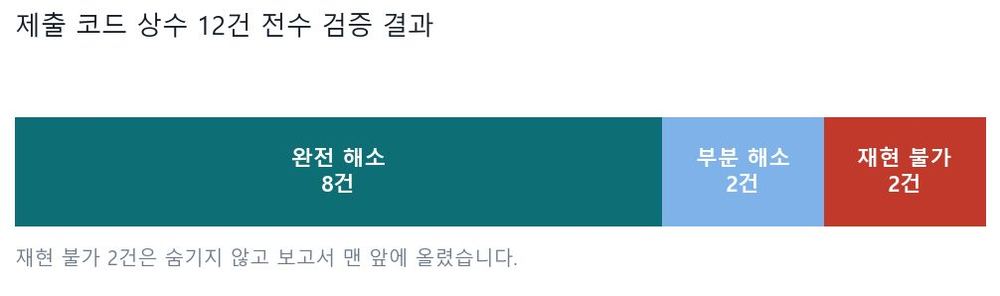
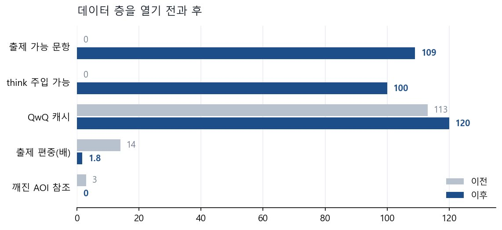
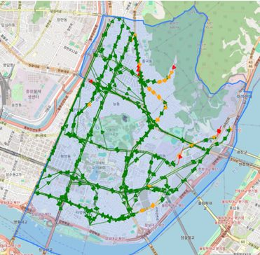
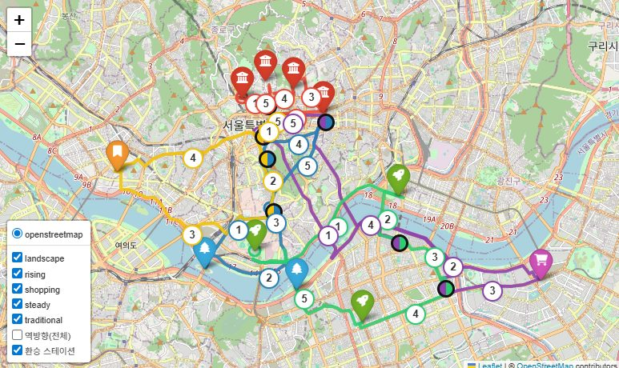
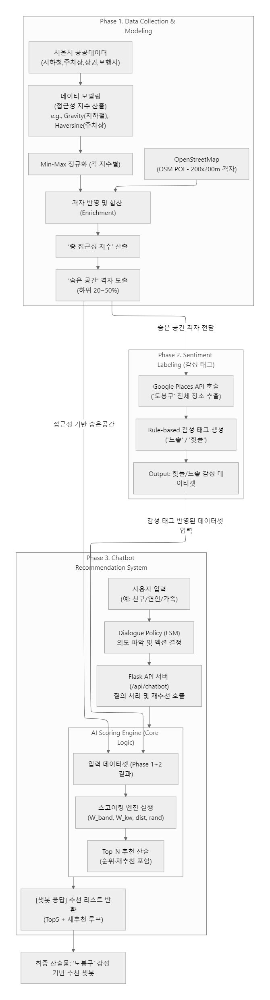
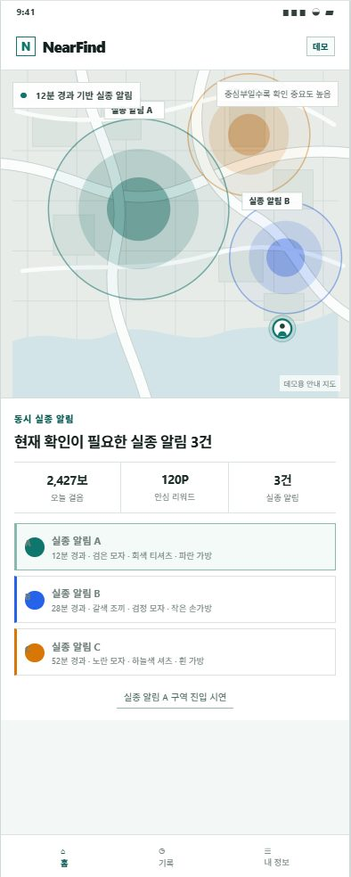
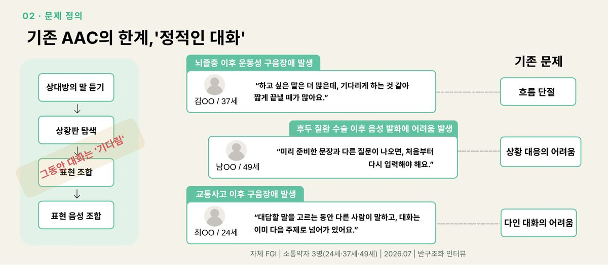

Projects
프로젝트
각 페이지에 배경 · 데이터 · 접근 · 설계 결정 · 이슈 기록 · 한계 · 금융 직무와의 연결을 남겼습니다. 잘된 것뿐 아니라 막혔던 지점과 인정하는 한계도 적었습니다.
금융 · 리스크
여신 리스크, 현금흐름, 재무공시 — 금융 도메인을 직접 다룬 프로젝트입니다.

2026.05 – 2026.07NOVA — 협력사 위기 조기탐지 시스템
재무제표가 나오기 전에 공시 언어의 변화로 원청–협력사 연쇄 부실을 미리 잡아내는 여신 리스크 시스템위기 vs 우량 3배탐지력 2.7배하나금융 최종 성과
자세히 보기 →

2026.09고르게 (Goreuge)
프리랜서의 미수금 지연이 현금흐름에 미치는 영향을 계산해, 언제까지 버틸 수 있는지 D-day로 보여주는 MVP금융 AI Challenge커밋 115건현금흐름 D-day
자세히 보기 →

2026.08 – 2026.09공시 Agent · Dartrio
DART 전자공시 원문을 근거로 인용하며 답하는 재무공시 RAG 에이전트공시 4,204건근거 인용미래에셋 AI Festival
자세히 보기 →
모델 검증 · 데이터 품질
만든 것을 의심하고 검증한 기록입니다. 모델 리스크 관리와 같은 종류의 작업입니다.

2026.08 – 2026.09LG Aimers · 학습코드 재현 검증
제구 성공 확률 예측 모델과, 제출 코드의 상수 12건을 학습 데이터만으로 전수 재현한 검증 보고서행 147만일치율 1.000000자진신고 3건
자세히 보기 →

2026.01 – 현재FHTC — 시선으로 오답 원인을 진단하는 시스템
초등학생이 수학 문제를 풀 때 시선이 어디로 향하는지로 오답 패턴을 탐지하고 피드백하는 시스템. 제가 Phase 1~4 전 구간을 담당했습니다오답 패턴 5종문항 0 → 109편중 14x → 1.8x
자세히 보기 →
지표 설계 · 공간 분석
정의가 없던 대상을 측정 가능한 지표로 만든 프로젝트입니다.

2025.03 – 2025.05도로 결빙 위험지수 설계
결빙·경사·이용객 노출을 통합한 위험지수로, 열선을 먼저 깔아야 할 도로를 제안한 분석민원 일치 80%+RiskIndex 설계
자세히 보기 →

2025.06 – 2025.08관광 순환 택시 경로 최적화
공공 교통·관광 데이터로 순환 택시의 최적 경로를 설계하고 실측 오차까지 보정한 모델오차 ±4.8%최고의 태도상
자세히 보기 →

2025.03 – 2025.11지역 접근성 지수 · 추천 챗봇
정의가 없던 '감성 공간'과 '접근성'을 수치로 만들고, 의도 기반 추천 챗봇까지 연결한 프로젝트접근성 지수Gravity ModelFlask 챗봇
자세히 보기 →
AI 서비스 · 사회문제
사회문제를 AI 서비스로 푼 프로젝트입니다.

2025.11피싱 문자 하이브리드 탐지
KoBERT 분류기와 SBERT 오탐 임베딩 뱅크를 결합해, 놓치면 안 되는 쪽으로 설계한 탐지 시스템Recall 0.9672해커톤 대상배포 완료
자세히 보기 →

2026.08NearFind — 실종 시민 제보망
실종 안내 문자를 인상착의 이미지로 바꾸고, 마지막 확인 장소 근처 시민에게만 알려 신고로 잇는 MVP공공 안전책임 있는 AI 설계
자세히 보기 →

2026.07개화 — 소통 약자를 위한 AAC 서비스
본인의 어투로 완성된 문장을 대신 말해주는, 상황 인식 기반 발화보조 서비스AAC다중 화자 인식FGI 기반 설계
자세히 보기 →